30.1.1. How to add Die stress 2D operation
30.1.7. Inter-object relations
After the completion of a 2D Forming operation, Die stress 2D Operation can be added in MO wizard from explorer tab by clicking on  button next to Die
Stress 2D from Explorer tab or we can add the Die stress operation as scheduled operation along with the Forming operation setup, user can also add operation by dragging and dropping the operation into the Operation Editor as shown in Fig. 30.1.1. If die stress operation is set up as scheduled then DB cannot be generated at the time of setup, DB is generated automatically after the completion of forming operation and die stress analysis operation is carried out. If the Die stress operation
is scheduled before completion of the forming simulation then user must define scheduled positioning for the moving dies to define accurate position for force interpolation.
button next to Die
Stress 2D from Explorer tab or we can add the Die stress operation as scheduled operation along with the Forming operation setup, user can also add operation by dragging and dropping the operation into the Operation Editor as shown in Fig. 30.1.1. If die stress operation is set up as scheduled then DB cannot be generated at the time of setup, DB is generated automatically after the completion of forming operation and die stress analysis operation is carried out. If the Die stress operation
is scheduled before completion of the forming simulation then user must define scheduled positioning for the moving dies to define accurate position for force interpolation.
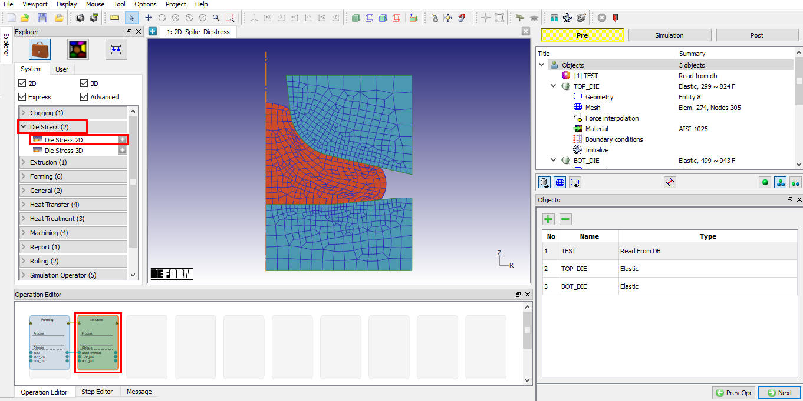
Adding Die stress 2D operation to operation editor
User can add required number of additional objects for the simulation by clicking  button. Fig. 30.1.2. shows three objects passed from previous forming operation to die stress operation. User can add necessary fixtures and other components based on the setup.
button. Fig. 30.1.2. shows three objects passed from previous forming operation to die stress operation. User can add necessary fixtures and other components based on the setup.
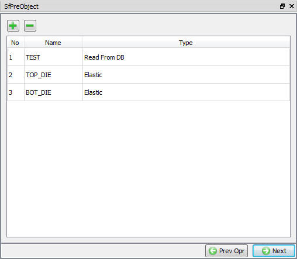
Objects window
Workpiece: Workpiece is an plastic object type which is treated as read from DB as the data for it is read from previous operation. User can also import object using Import object option available in Object General Page for new objects added at this operation.
Note: User has option to import object even for workpiece which are actually read form DB hence user is advised not to import objects for workpiece type as these will be deleted at the time of DB generation and will not be considered for analysis.
Dies: The objects that are defined as Dies will be treated as elastic object. These objects will be meshed and forces are interpolated from Workpiece.
Fixture: The objects that are defined as fixtures will be considered as rigid and no mesh is required for these objects unless heat transfer calculations are required to be carried out.
Workpiece:
As we do not need the workpiece for die stress analysis, it will be removed during the DB generation, this object will not appear in the post processor mode. user can neglect the workpiece by clicking  button (See Fig. 30.1.3.).
button (See Fig. 30.1.3.).
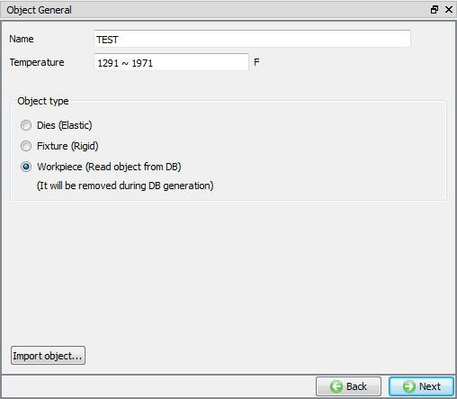
Workpiece Window
General
In this window user can set temperature for the object and select type of the object as shown in Fig. 30.1.4. For dies by default Object type is selected as Elastic.
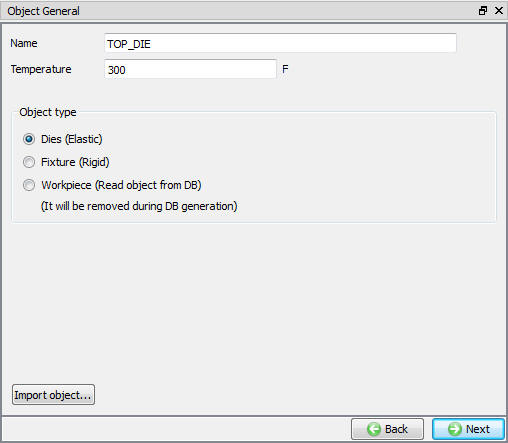
Top die window
Geometry
User can define the new geometry or modify the existing geometry by using options from geometry window . Guided mode provides basic options for defining geometry (See Fig. 30.1.5.).
If user need other advanced option, then user has to switch to expert mode by clicking on  . Expert mode provides various options like Extract border, construct by subtraction and
show geometry inside mark (See Fig. 30.1.6.). Geometry can also be imported using Import geometry from File
. Expert mode provides various options like Extract border, construct by subtraction and
show geometry inside mark (See Fig. 30.1.6.). Geometry can also be imported using Import geometry from File  option or using Import from Library
option or using Import from Library  option. user can also import geometries in other formats such as .DXF and .IGES. Primitives are provided for easy definition of basic
geometry shapes. For more information on creating and editing 2D geometries please refer to 12.2. 2D Geometry Editing
option. user can also import geometries in other formats such as .DXF and .IGES. Primitives are provided for easy definition of basic
geometry shapes. For more information on creating and editing 2D geometries please refer to 12.2. 2D Geometry Editing
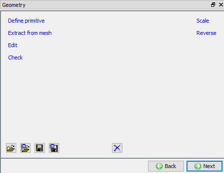
Geometry window in Guided mode
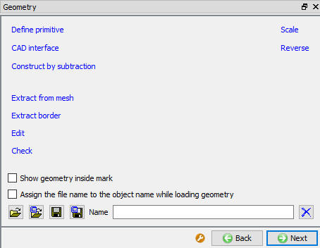
Geometry Window in Expert mode
Object Mesh
Mesh Page provides options to mesh the object. Guided mode provides option to set number of elements using slider bar to generate
mesh. If the object geometry is complex or user would like to control the mesh density over the object, then user has to switch to expert mode by clicking on  . Expert mode provides
various options like weighing factors, Mesh windows and user defined mode to control the mesh density. Meshing options available in expert mode and Guided more are shown in Fig. 30.1.7. and Fig. 30.1.8. For more detail description of these options, please refer 13.1. 2D Mesh Generation.
. Expert mode provides
various options like weighing factors, Mesh windows and user defined mode to control the mesh density. Meshing options available in expert mode and Guided more are shown in Fig. 30.1.7. and Fig. 30.1.8. For more detail description of these options, please refer 13.1. 2D Mesh Generation.
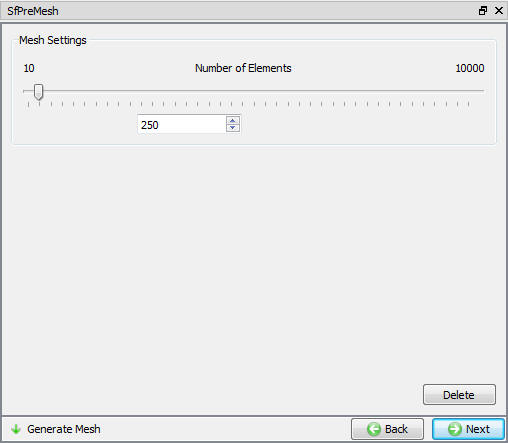
Guided mode mesh options
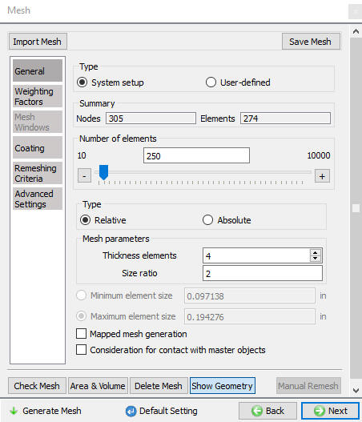
Expert mode mesh options
Force Interpolation
To interpolate the force from workpiece object (reference object) to the dies user need to turn on the Interpolate force check box and enter the error tolerance value. These interpolated
forces will generally not be exactly equal. The Error tolerance controls this to some degree. Putting in a higher tolerance will interpolate the forces from more of the billet’s surface nodes, increasing the forces interpolated to the dies. As long
as the forces for the Billet and the Die are pretty close, the interpolation is considered successful.
For Interactive mode select  , for Batch mode turn on the Interpolate force check box to schedule force interpolation onto Dies automatically before generating DB as shown in
Fig. 30.1.9. The interpolated forces can be seen as shown in Fig. 30.1.10.
, for Batch mode turn on the Interpolate force check box to schedule force interpolation onto Dies automatically before generating DB as shown in
Fig. 30.1.9. The interpolated forces can be seen as shown in Fig. 30.1.10.
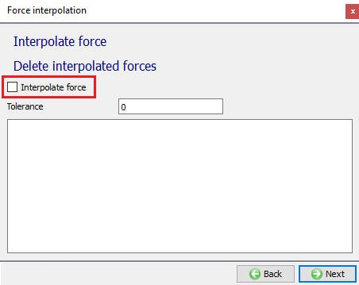
Force Interpolation window
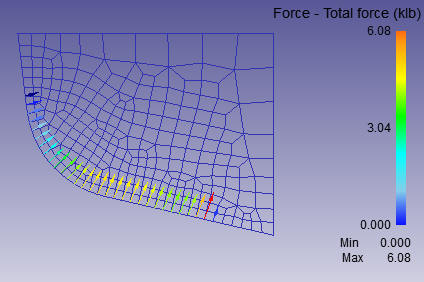
Interpolated Forces
Object Material
In material window, all the materials inherited from the previous operation are displayed (See Fig. 30.1.11.),
Also user can load the material required for this operation in Object material window using Import Material data from a File  or Using Load form Library option
or Using Load form Library option  .
.
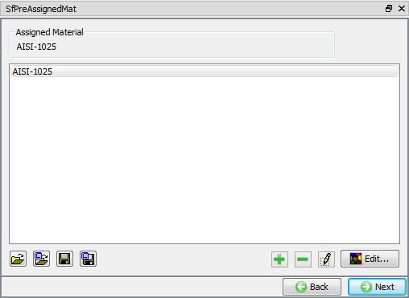
Material window
Object boundary conditions
When we interpolate the forces from billet, forces are applied to dies, this makes the dies to displace erratically during simulation. To prevent erratic displacement
of dies suitable boundary conditions needs to be assigned. Velocity BCC can be used to arrest the displacement of dies (See Fig. 30.1.12.).
Velocity BCC is assigned to top edge of the die is shown in Fig. 30.1.13.
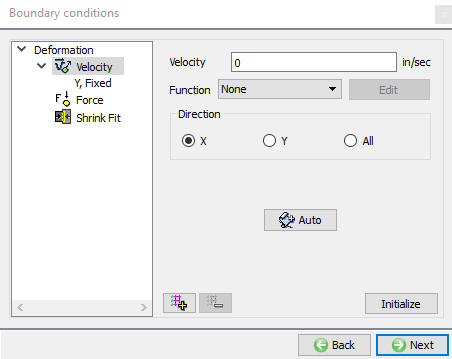
Boundary conditions window
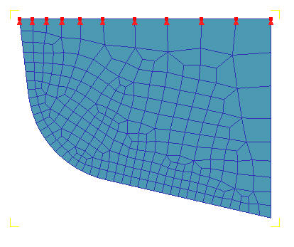
Velocity Boundary conditions assigned in Y direction
Shrink fit
Shrink Fit BCC in 2D used for die stress analysis, shrink fit conditions are defined between a die insert and a shrink ring. This can be defined by following steps,
Entering the interference value.
Selecting the Direction (Direction perpendicular to the inner surface of the shrink ring or outer surface of the Die insert)
Selecting the inner surface of the shrink ring or outer surface of the Die insert (surface which is contact with the die)
If shrink fit is applied to the inner object, the value should be negative and if shrink fit is applied to the outer object then the value should be positive.
For more information on shrink fit, Please refer 2D Die Stress Analysis - Theory.
Fig. 30.1.14. & Fig. 30.1.15. shows shrink fit BCC applied to shrink ring.
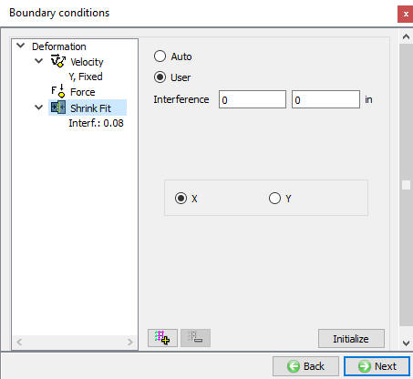
Shrink Fit BCC window
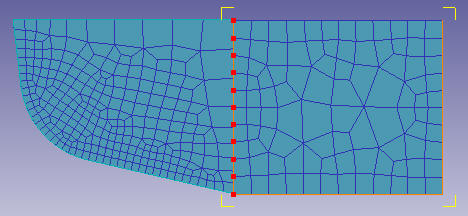
Shrink Fit Boundary conditions assigned
Initialize
In Initialize window, few state variables that are commonly used such as Temperature, strain, stress, damage, velocity, Displacement, etc.., are made available for initialization.
User can initialize the values for these state variables by clicking on  button. Fig. 30.1.16. shows the various state variables that are available in Initialize window. Depending on the type of state variable, user can also initialize them from Node and Element data windows.
button. Fig. 30.1.16. shows the various state variables that are available in Initialize window. Depending on the type of state variable, user can also initialize them from Node and Element data windows.
For more information on how to initialize state variables in Node and Element windows, please refer 17.1. Node Data Window and 17.2. Element Data Window.
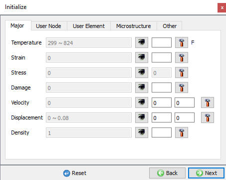
Initialize window
Fixtures
Fixtures that hold dies can be defined in this operation. Fixtures are considered as rigid objects in this operation. The geometry definition and editing for these objects is similar to that of the dies. The objects require
mesh, bcc and material definition when thermal calculations are turned on and these variables can be defined in a similar way to that of the dies.
Fig. 30.1.17. shows Controls window, user can position the fixtures and die objects that are added using position objects button. Various positioning options are available to position the objects as shown in Fig. 30.1.18. For more information on these options please refer 19. Object Positioning.
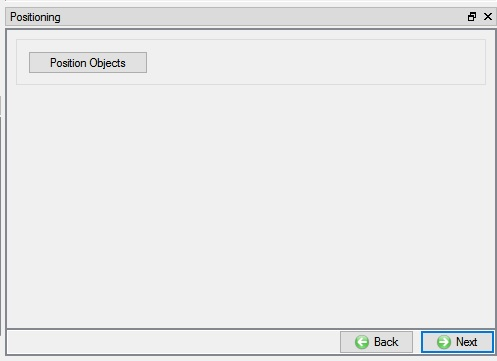
Positioning window
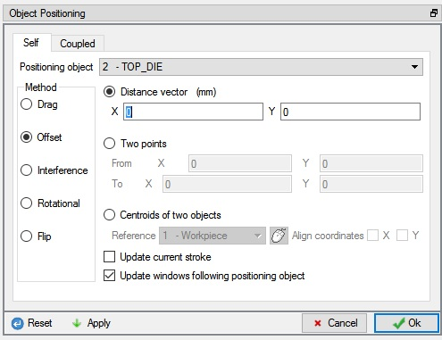
Object positioning window
When user is not sure about the location of an object as in case of Read From DB objects and die stress analysis operation is added in batch mode, scheduled positioning will help to position the objects accurately.
Schedule positioning allows the user to define the positioning for objects in MO setup for successive operations for which DB is not generated so that the objects are positioned before generation of DB while running simulation in Batch mode (See Fig. 30.1.19.)
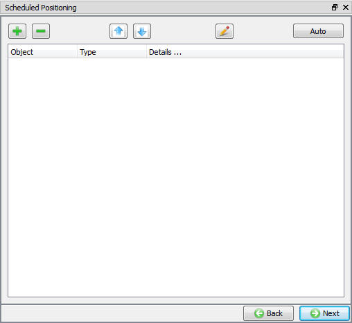
Scheduled positioning window
The purpose of inter-object relations is to define how the different objects in a simulation interact with each other.
In Contact window, both Guided and Expert  mode options will be in Active mode, in guided mode
all the possible relations are already present in the list (See Fig. 30.1.20.). User needs to define the type of relation and
Friction value for objects that are in contact for the selected relation. While setting up Die stress analysis in batch mode, user can schedule contact generation using Expert
mode options will be in Active mode, in guided mode
all the possible relations are already present in the list (See Fig. 30.1.20.). User needs to define the type of relation and
Friction value for objects that are in contact for the selected relation. While setting up Die stress analysis in batch mode, user can schedule contact generation using Expert  mode options.
mode options.
In Expert mode, the relations table shows the current inter-object relations that have been defined as shown in Fig. 30.1.21. All objects which may come in contact with each other through the course of the simulation must have a contact relation defined.
System: By selecting this radio button, system assigns default inter-object relationships. Also user can add the lubricants if necessary by selecting Add New from pull down menu and clicking on "Edit" button or user can load the required lubricants from the library for the simulation.
User: By default, user radio button will be selected. User can add relationships by clicking on  button.
button.
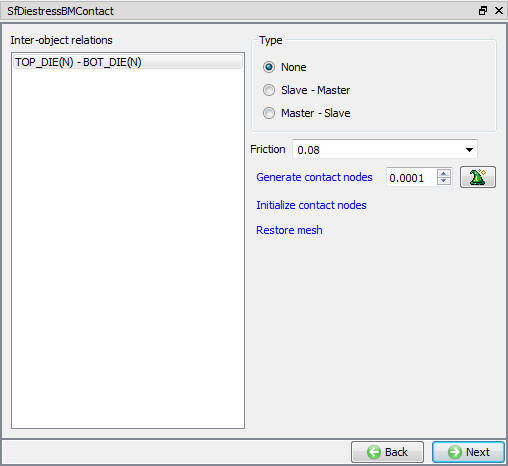
Inter object window in Guided mode
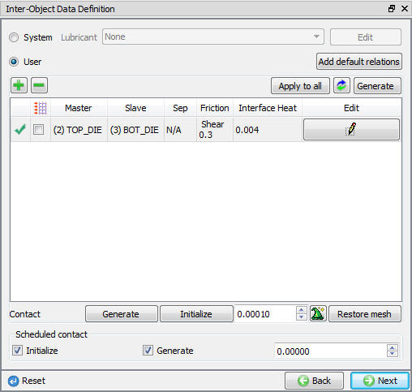
Inter object window in Expert mode
Number of simulation steps
When the stress analysis is being done on only one tool, a one step simulation is sufficient to get accurate stresses. When the stress analysis is being done on die assemblies where there is interaction
between the tools, more than one step is typically needed for the die stack to come to a state of equilibrium under the applied load.
User can turn on thermal calculation by turning on Heat Transfer mode from Expert mode and defining respective thermal BCC from object BCC options and Heat Transfer coefficient values from inter-object window.
Step increment to save
The step increment (STPINC) to save in the database controls the number of steps that the system will save in the database. When a simulation runs, every step must be computed, but does not necessarily need
to be saved in the database. As the steps that will be run for die stress analysis is less, user can store each step.
Step increment control
Solution step size is controlled by time step. Maximum elapsed process time per step can be defined as 1 sec for Die stress analysis operations.
Fig. 30.1.22. shows the Simulation Controls in Guided mode.
Fig. 30.1.23. shows the Simulation Controls in Expert mode.
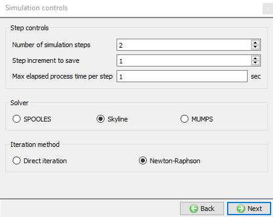
Simulation control in Guided mode
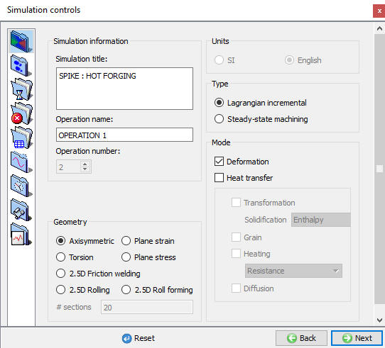
Simulation control in Expert mode
For more information and description about options in Simulation controls, Please refer 9. Simulation Controls.
Check data 
It checks the Data. If Data is correct we can generate DB. But while checking Data if it gives any errors or warnings then they should be corrected
before generating Database. Errors will not allow the database to be generated while warnings will allow the DB to be generated.
Generate database 
By clicking on this button, it generates the Database for the setup.(See Fig. 30.1.24.)
Append key file
Any information that is not defined in the wizard but still applicable to the process can be loaded as .key file. This option is also useful in the cases where only few values needs to be changed then those values
can be defined as .key file and only .key file can be changed and simulation can be resubmitted.
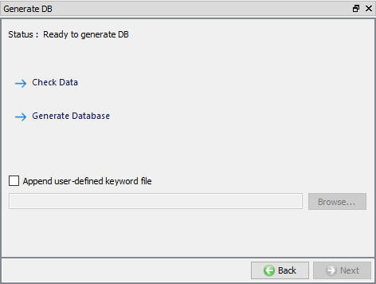
DB generation window
Related Topics:
6.1. Integrated Manufacturing Process Pre- Processor Layout
6.2. Integrated Manufacturing Process.Simulation layout
6.3. Integrated Manufacturing Proces Post - Processor layout